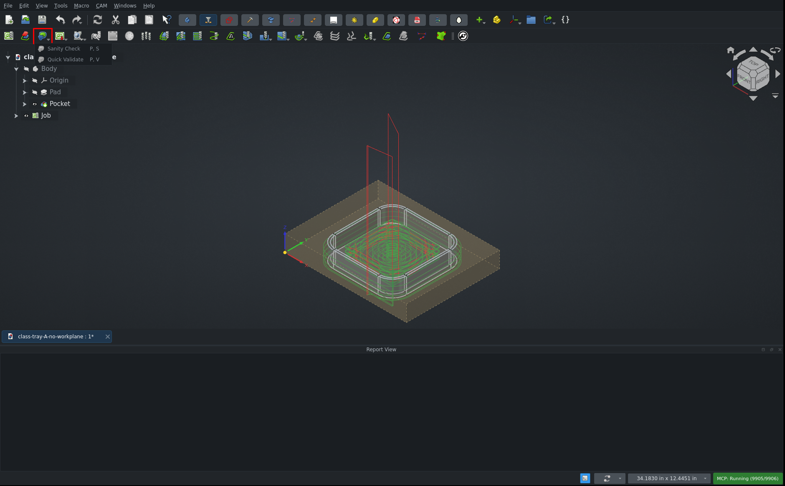
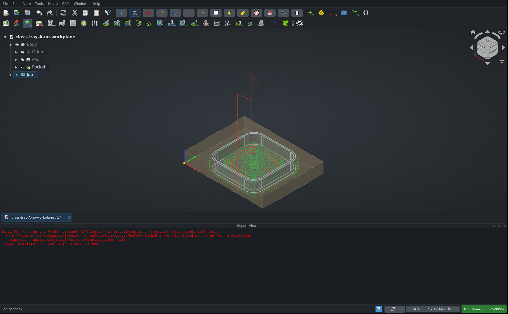
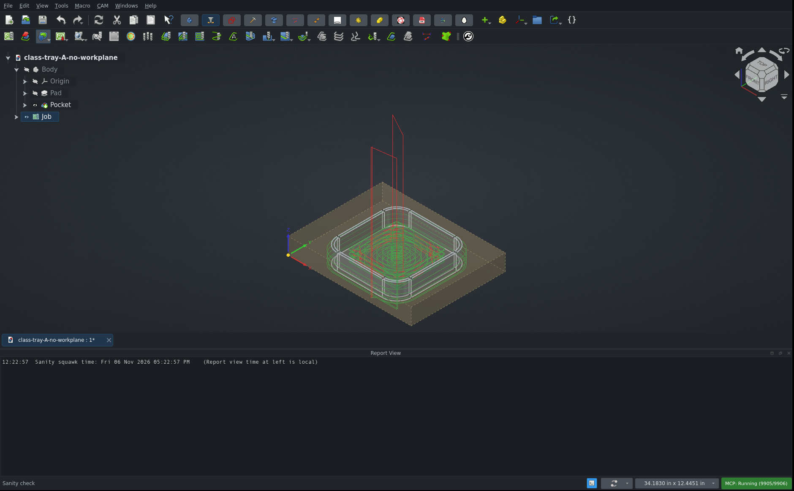
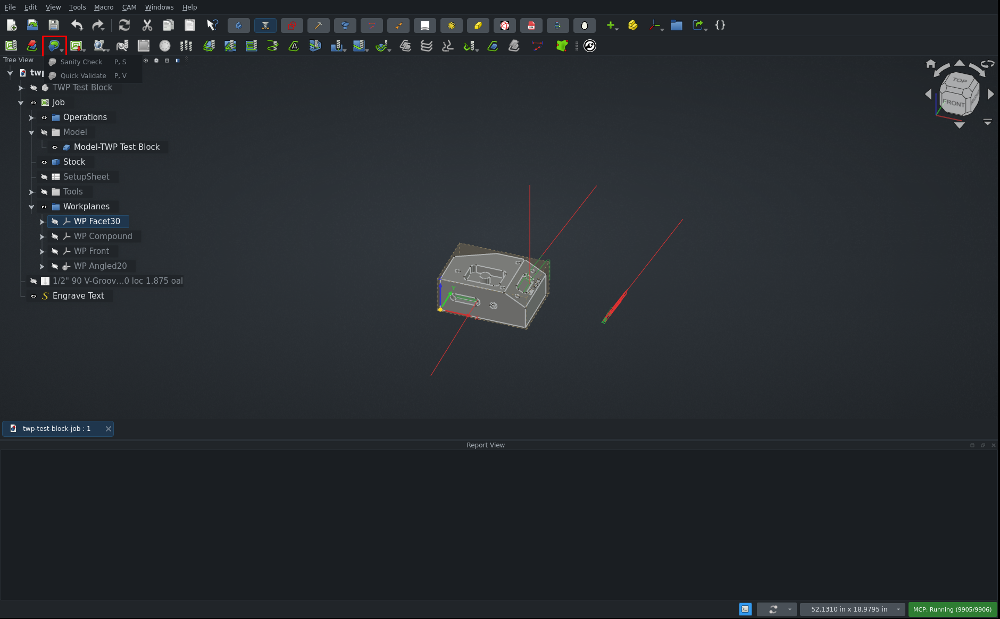
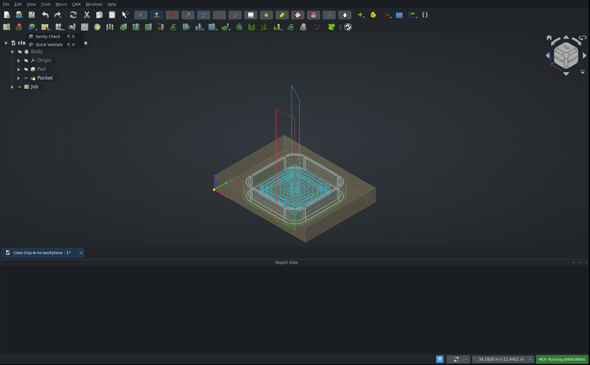
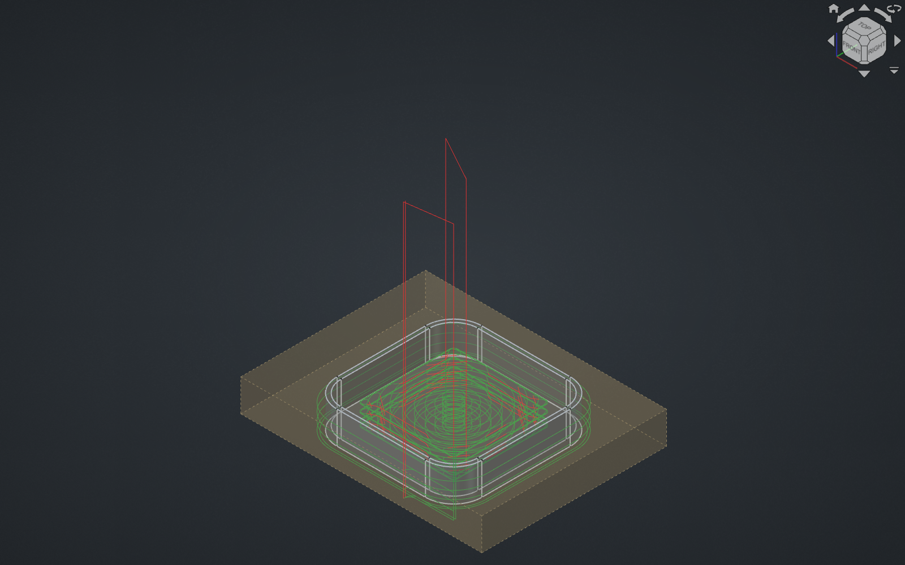

and consider structural direction and where refactoring might be appropriate.
CAM unit tests with the PR applied: Ran 2095 tests · OK (skipped=12, expected failures=4)






The dropdown, the menu entry, Quick Validate and the wider selection all work otherwise. Toolpaths are not touched.
| Check | Result |
|---|---|
| CAM unit tests | 2095 run, OK (12 skipped, 4 expected failures). The PR adds no tests. |
Toolbar group CAM_SanityTools |
Present in Project Setup, dropdown has both commands |
CAM_QuickValidate in the CAM menu |
Present, runs on a selected operation with the real mouse |
| Sanity from a non-Job object | Works for operation, dressup, Stock, Tool Controller and Model clone |
| Full HTML report from a selected operation | Written in 1.6 s, with the report path preference stubbed in memory to avoid the crash below |
| Operation from a second Job | Resolves to that second Job |
| Main vs PR, Sanity output | Squawks and run summary identical on class tray, TWP block and the pre-#30402 file; only the time differs |
The A/B compared the PR against its parent commit, 12f49672ed9, on main. The PR changes no toolpath code, so the comparison covered Sanity output rather than path statistics.
SanityCmd.py:78 still passes obj to apply_path_substitutions(), but the PR removed that variable. The fix is to pass job.
The preference is empty by default, so a quick test misses this, but anyone who has set it loses the command entirely. The test profile here already had a path set.
Result with .../CAMCheck/%d.html set, Job selected |
|
|---|---|
| Main | Offers .../CAMCheck/class-tray-A-no-workplane.html in the save dialog |
| PR | NameError: name 'obj' is not defined, no dialog, no report |
Sanity.py:108 uses datetime.now(tz=utc) and formats it with %c, which prints no zone, into a variable named local_date_str.
Moving the default out of the signature is a real fix: main freezes the time when the module is imported. The new default just swaps one wrong time for another. Measured on a machine in EST:
| Two calls 3 s apart | Local clock | |
|---|---|---|
| Main | 12:19:17 PM, 12:19:17 PM (frozen) |
12:19:20 PM |
| PR | 05:19:21 PM, 05:19:24 PM (live, UTC) |
12:19:24 PM |
The post processor's own squawks use local time (Processor.py:3391), so one Quick Validate or post dialog list can mix both. datetime.datetime.now() fixes it.
PathCommandGroup.IsActive (InitGui.py:54) only checks that an object named Job... exists, and ignores its child commands. The dropdown entries and CAM menu entries gray out correctly, but the button itself does not. Clicking it reaches the new guard in Activated, which returns with no message.
The CAM menu entry for the same command is disabled in the same state, so the group is what changes this. The Post group behaves the same way on main, so the pattern already exists; it is new for Sanity.
findParentJob() returns nothing for these rows under the Job:
Workplanes group and each work plane in itjob.Workplanes exists, but it is missing from the list findParentJob() checks. Selecting one of these rows leaves both commands disabled, and combined with defect 3, the button looks ready and does nothing. CAM_Post is limited the same way, so fixing the helper helps both.
WP Facet30, or the Workplanes group.None. Four review candidates were dropped:
_toolData appends None for legacy tools (Sanity.py:450): untouched by this PR, also on main.translate() gets an f-string (SanityCmd.py:166): untouched by this PR, also on main.App::Link: main's name check does not either, so this is no regression. See the refactoring notes.No properties, enum options, defaults or file formats changed, and nothing was removed.
CAM_SanityQuick.svg (tested). Its metadata title still says CAM_Sanity.P, V shortcut runs Quick Validate (tested on the PR; main not compared).Dressup in the name (tested). This fixes a crash: on main an operation named MyDressupProfile raises 'list' object has no attribute 'Label', and the PR lists it correctly. A dressup named WrappedLead shows as WrappedLead:Profile on the PR; main was not compared for that case.AttributeError in IsActive (tested against main's code).addIconPath was removed from Activated (tested: icons still load; InitGui.py already adds that path).The PR links no other PRs or issues.
This section answers the request to consider direction. Items 1 and 2 are small enough for this PR. The rest suit follow-ups.
SanityCmd.py (lines 59, 64, 133, 138), and the same idiom is in Post/Command.py:126 and SimulatorGL.py:246. A shared helper, such as selectedJob(), would replace them. The two Sanity commands could also share a base class for IsActive.findParentJob(), not in the commands. Adding i.Workplanes closes the work plane gap, and following a ToolBit up to its Tool Controller closes the other. Better still, the Job could own the list of what it contains, so new child groups can't be missed again.PathCommandGroup reflect its children. IsActive could return true only if a child command is active, instead of matching the name prefix Job. This also changes the Post, Simulator and other groups, so it needs checking across all of them.CAMSanity into checks and report. It currently gathers data, runs the rules and builds images together, and __init__ does all of it. validate_job() has to bypass the constructor with object.__new__, a temp folder and a dummy image builder to avoid that. A plain checks layer would serve Quick Validate and the post dialog (DlgPostProcess.py:681), with the data, images and HTML used only for the report.CAMSanity.squawk() never uses instance state, and Processor.py:3390 builds the same dictionary separately with its own icon map. One shared function would have prevented the mixed times in defect 2.validate_for_postprocessing() (Sanity.py:680). Only a unit test calls it. It also finds critical squawks by matching English keywords against translated text, so it would fail in other languages.Sanity.py:359 copies the condition in baseOp() (Path/Base/Util.py:179) without its App::Link branch. An isDressup() helper used by both would keep them together.SanityCmd.py has no tests, which is how defect 1 passed CI. Moving the file name logic into a plain function, such as default_report_path(job), would let a unit test cover it.InitGui.py:417, tested). Right-clicking an operation shows neither, even though both now work there.